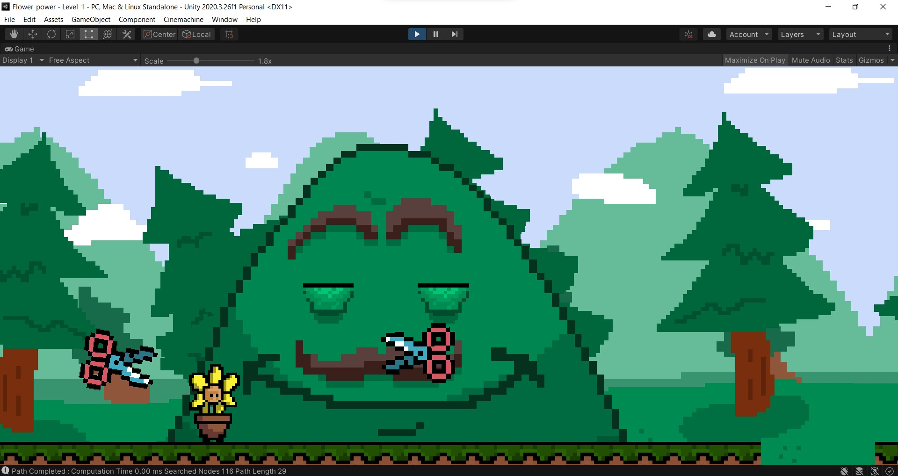

Matthew Barry
Texas A&M Computer Science, Class of 2024
Matthew Barry
Howdy! My name is Matthew Barry, and I was born and raised in Cypress, Texas.
I am fascinated by all types of software development and am constantly looking for ways to strengthen my understanding and deepen my knowledge of the profession. I was initially drawn into the world of computer programming in my sophomore year of high school, where I was inspired by my coding-veteran programming teacher who had previously worked on the Overwatch game at Blizzard Entertainment.
I was always fascinated with the actual logic behind all technologies with which I interacted—videogames, my iPhone, even simple webpages—but never before had I made the connection that following this intrigue could possibly one day lead to a successful career path. It did not take to long for me to know that this was the path that I was drawn to follow, and I am now privileged to find myself entering my junior year at Texas A&M University, where I study Computer Science as a full-time student. I have always prided myself in my diligence and creativity, attributes that have absolutely helped me succeed in my time at Texas A&M, but were initially the primary skills of which I was aware I possessed. Now however, studying at university has brought to light more abilities from within myself that I had never had the chance to truly test before. During my two years here, I have been made acutely aware of a personal affinity for project management and leadership through various types of group projects, such as: weekend-long programming competitions; large-scale, hardware-based logic designs; and semester-long programming workshops. Furthermore, these situations have been some of the most enjoyable programming experiences I have had, and have solidified in my mind the choice to pursue this route in my studies. These projects have been my first real exposure to workplace collaboration, and have left me eagerly anticipating future projects that could provide even more enriching, real-world scenarios.
My anticipated graduation is May 2024, after which I am planning on pursuing a job in software development.
My LinkedInTechnical Portfolio
During the afformentioned Hackathons hosted by Texas A&M, I worked with a team to create two projects:
Rev's Musical Keyboard of Wonders
Despite the silly name, this project was quite the task to complete. We developed a website using html, CSS, and JavaScript
that allows the user to play a fully working, 8-key piano keyboard, with up to 5 playable notes at a time.
We also implemented two songs that, when selected, would prompt the user to type a sequence of keys. If the keys are correctly
pressed in order, the full version of that song plays for the user to enjoy. This feature was inspired by The Legend of Zelda
series' style of letting the player play an instrument.
Seeing as this was my first major coding project, it is definitely rough around edges. If I remade this today, I would make the website more pleasing
for the user to look at. I would also make the soundbytes played when playing a song correctly of much higher quality.
Link to GitHub:
Keyboard GitHubSonny Potts
For my second hackathon, my team and I decided to create one level of a 2D side scroller video game, with an original chracter Named
"Sonny Potts" as the player controlled, main character. The player must make Potts travel from the left to the right without being eliminated
by various gardening-themed enemies that stand in his way. This program was made in Unity 2D, using C#.
The artwork and animations in this game are 100% all done by me in a program called Aseprite, and though we wish we could have made the game longer,
we were proud of the final product. This project put my leadership and teamwork skills to the test, as I was left to delegate the work while simultaneously trying to
complete my own portions of the project.
Screenshot:
Link to GitHub:
Sonny Potts GitHubQualifications
Resume
Resume PDF External LinkTechnical Skills:
My time at Texas A&M has taught me invaluable programming skills and knowledge. These include a proficiency in C++ and Java, a deep understanding
of Python, Haskell, and HTML, and a familarity with CSS and JavaScript. I am excellent with time management, and my communication skills have
saved my neck on many a project. Additionally, I have had many rewarding leadership experiences during my run-ins with working on group projects.
Below is my GitHub page: there, one can find all of my projects which may show demonstrations of the skills I have honed.
My GitHubTechnical Areas of Interest
I am mainly interested in the software development side of programming, which stems from my love of videogames. I would love to one day find myself
working at an American videogame company working on software for franchsies I love, however I am excited by the prospect of working at any
software development company where I can flex my creative muscles a bit. I treat coding assignments like puzzles, and I know that there is an elegant
solution to be found for any problem with which I am faced. When I look around me, I am truly fascinated by the artistry
involved in making an efficient, yet complex program, and the mindset and knowledge required to get oneself to that level of expertise.
Service
I have not done much in the vein of service on a professional level, but I do give back to my community with my Bible study group at Restoration Church in Byran, Texas.
We particpate in community volunteering near the MSC, as well as in the church's surrounding neighborhoods.
Prospects
I would love to get more invloved with giving back to the College Station community by participating in organizations like The Big Event or TAMUHack's
philanthropy. Somehow, the opportunity for both passed me by in the Spring of 2022, and seeing my friends experience something so fufilling left me
seriously disappointed that I missed out. The community is what makes Texas A&M so special; the comminity creates the traditions, the community funds events,
and the community is always there for those in need. I feel as though I have not truly experienced being an Aggie until I have given it something in return.
As for TAMUHack, to be able to help set up hackathons for the university has been something I have wanted to do since I participated in my first
one last fall. They are completely free events for those particpating, and I have particpated in two: this means that I have gotten loads of free food
and other goodies for no cost at all. To me, it only seems right to give back by contributing myself to future hackathons.